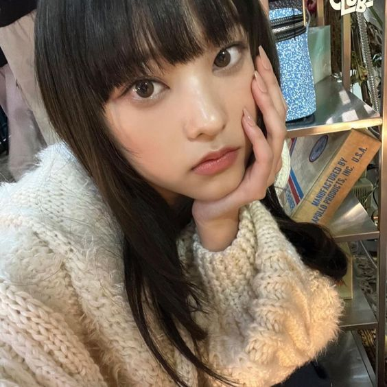
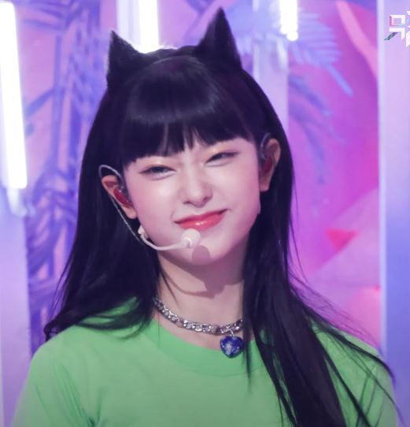

Stage Name: Haerin (해린)
Birth Name: Kang Haerin (강해린)
Birthday: May 15, 2006
Zodiac Sign: Taurus
Chinese Zodiac Sign: Dog
Height: 164.5 cm (5’4”)
Weight: –
Blood Type: B
MBTI Type: ISTP
Nationality: Korean
Haerin Facts:
- Some of her nicknames are Choco Bread, Baby Cat, and Frog.
- Her favorite food is Korean food, raw fish, and nuts, but she really just likes eating everything.
- Haerin used to play pansori, and was nicknamed the voice fairy.
- Her hobby is listening to music, collecting gifs and photos, and reading.
- Haerin’s specialty is listening and finding music.
- Before she sleeps, she has a habit of spraying aroma since it comforts her and because of the refreshing scent.
- She wants to shop and travel with the rest of the members one day.
- If she had to listen to one K-pop song for the rest of her life, she would listen to Chungha’s “Rollercoaster”.
- She loves bright colors and flowery scents.
Gallery

